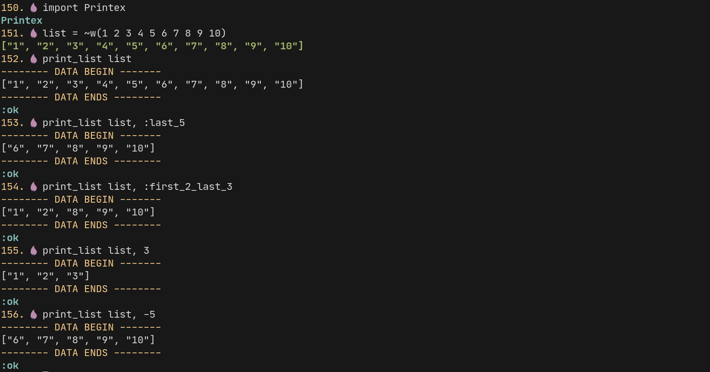
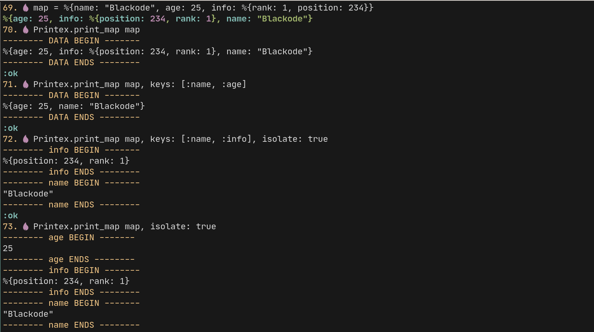

printex v1.1.0 Printex
Documentation for Printex
Printex helps you to print the data and strings in color text and color
backgrounds. It make use of the IO.ANSI Module.
Why Printex ?
This module prints the different console outputs with different colors and background colors as well.
Idea
We can see a lot of lines with regular text in your console at the time of
development. It will be hard to identify any of your IO.inspect statements
output in your console. I thought, it would be nice to highlight our inspect
statements outputs to distinguish from the regular lines already present
in the console.
It gives you the direct focus on the console by highlighting text with colors and backgrounds.
You can use this in multiple ways like printing the :error message and
many formats as well.
This helps you to identify the message from the regular out put of the console.
You can also specify the :bg_color - Background color for the text to lay on.
For more examples and screen shots and how to usage check the github
NOTE
Colors may vary from terminal to terminal...
Link to this section Summary
Functions
This prints the given text in the format you specified. The string formats are as follows :x_on_y here {x,y} can be any 8 possible colors
Prints the given data with the label provided.If the label is not provided
label data is used. How ever you can say not to use the label by passing :no_label
option
Prints the given message in the error format. It uses :red as a foreground text color
Prints the given message in the information format in the green color
This helps to print the list with number of units we need
This function helps to print a map with optons
Prints the given message in the warning format in the yellow color
This function puts the string accordingly to the given params. The first
argument should be the binary.
The second parameter is the foreground color that you what the string to be
print, and the third parameter is the background color used for printing the
string. However, passing colors are optional
Link to this section Functions
color_print(string, format)
This prints the given text in the format you specified. The string formats are as follows :x_on_y here {x,y} can be any 8 possible colors
- black
- blue
- cyan
- green
- magenta
- red
- white
- yellow
In addition you can also specify respective light combination of colors
Usage
:black_on_white
prints the text in black color with white background.:red_on_light_green white
prints the text in red color with light_green background.:light_blue_on_light_cyan
prints the text in light_blue color with light_cyan background.
x_on_y format colors

print(data, label \\ :default)
Prints the given data with the label provided.If the label is not provided
label data is used. How ever you can say not to use the label by passing :no_label
option
Examples
print("print with out label", :no_label)
print("I Print with Deafault label DATA")
print([1,2,3])
print("I print with Label", "Your Label Here")Usage
You can use this function in three different ways.
- Using the default label format.
print("hello") - With out any label text.
print("hello",:no_label) - Passing label option as string.
print("hello","greeting")here the text greeting is treated as :label 3.1 Passing label option as list.print("hello",label: "greeting")
print function

print_error(string)
Prints the given message in the error format. It uses :red as a foreground text color.
Examples
iex> Printex.print_error "This is error"Printing Error Text

print_info(string)
Prints the given message in the information format in the green color.
Examples
iex> Printex.print_info "This is info"Printing Information Text

print_list(list, count_label \\ :all)
This helps to print the list with number of units we need.
We can pass specific style text like in the following way
first_<num>exfirst_3to print the first 3 elements in a list given.last_<num>exlast_5to print the last 5 elements in a list providedfirst_<num>_last_<num>exfirst_3_last_5to print the first 3 elements and last 5 elements in a list
You can also pass just an integer like 3 and -3 the - specifies the
direction for printing of elements in a list.
Examples
iex> list = ~w(1 2 3 4 5 6 7 8 9 10)
["1", "2", "3", "4", "5", "6", "7", "8", "9", "10"]
iex> print_list list
-------- DATA BEGIN -------
["1", "2", "3", "4", "5", "6", "7", "8", "9", "10"]
-------- DATA ENDS --------
iex> print_list list, :first_3
-------- DATA BEGIN -------
["1", "2", "3"]
-------- DATA ENDS --------
iex> print_list list, :last_5
-------- DATA BEGIN -------
["6", "7", "8", "9", "10"]
-------- DATA ENDS --------
iex> print_list list, :first_2_last_3
-------- DATA BEGIN -------
["1", "2", "8", "9", "10"]
-------- DATA ENDS --------
iex> print_list list, -5
-------- DATA BEGIN -------
["6", "7", "8", "9", "10"]
-------- DATA ENDS --------
iex> print_list list, 3
-------- DATA BEGIN -------
["1", "2", "3"]
-------- DATA ENDS --------print_list function

print_map(map, options \\ [])
This function helps to print a map with optons.
You an either print whole map or specific keys in a map.
The options here is a Keyword with following keys
Options
keys- list of keys to be printlabel- A string label for the displayisolate- It is defaultfalseand if you pass astrue, each key gets printed
Examples
iex> Printex.print(map)
This prints the whole map
iex> Printex.print_map(%{name: "hell", age: "hello"}, keys: [:name])
This just prints the name
iex> Printex.print_map(%{name: "hell", age: "hello"}, isolate: true)
This prints each key in map separatelyprint_map function

print_warning(string)
Prints the given message in the warning format in the yellow color.
Examples
iex> Printex.print_warning "This is warning" Printing Warning Text

prints(arg1)
This function puts the string accordingly to the given params. The first
argument should be the binary.
The second parameter is the foreground color that you what the string to be
print, and the third parameter is the background color used for printing the
string. However, passing colors are optional.
The colors are to be of type atom and at present the following colors have
been supported
[:black,:blue,:cyan,:green,:magenta,:red,:white,:yellow]`However, it is optional to pass the color. By default it uses yellow
background with black foreground
Examples
iex> Printex.prints("message")
This FG Color `yellow` & BG Color 'black',
iex> Printex.prints("message",:red)
This prints the message in red color
iex> Printex.prints {"message",:red}
This prints the message in red color
iex> Printex.prints (%{string: "message",color: :red})
This prints the message in red color
iex> Printex.prints ("message", :red,:white)
This prints the message in red color with white background Text with foreground color